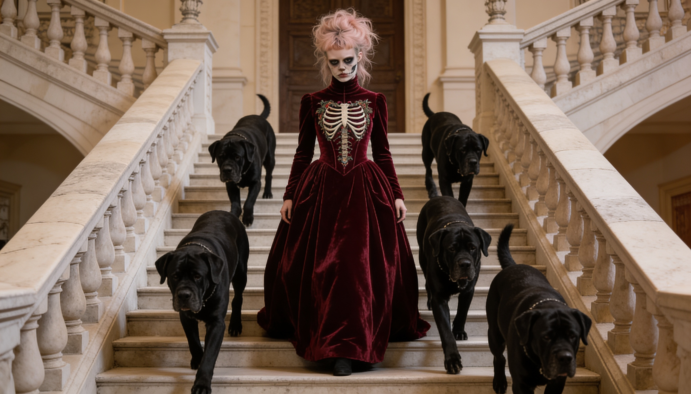
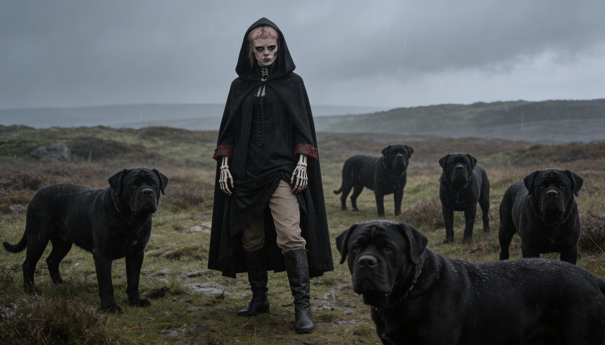
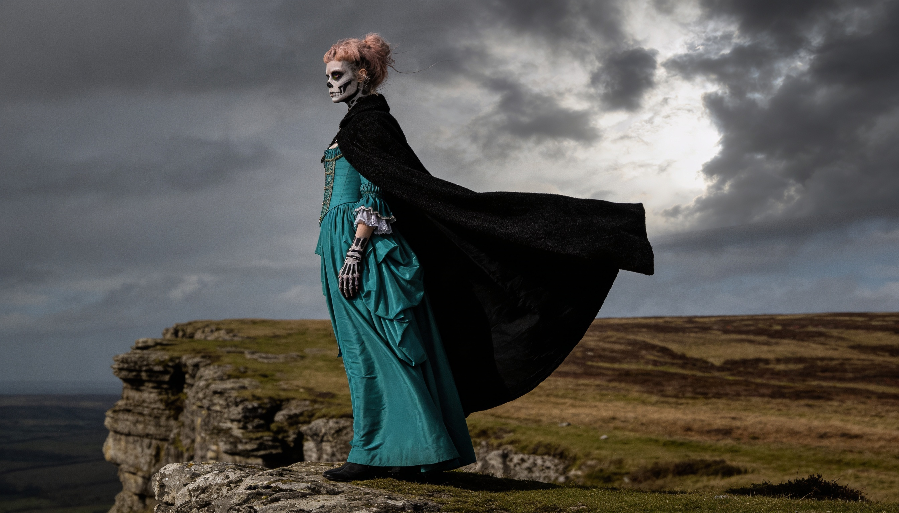
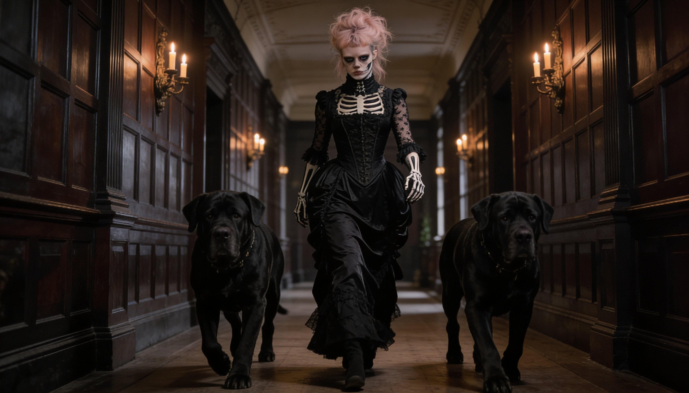
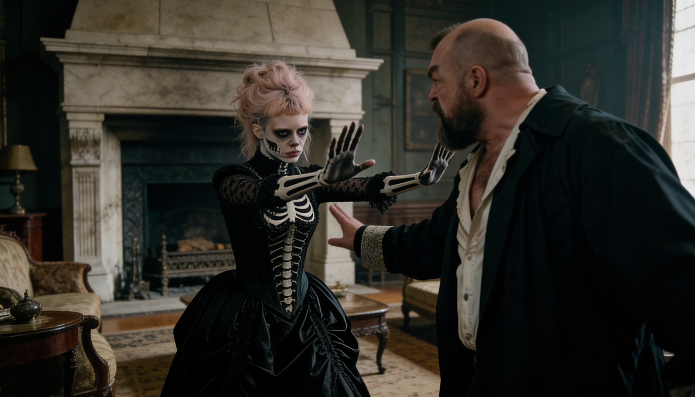
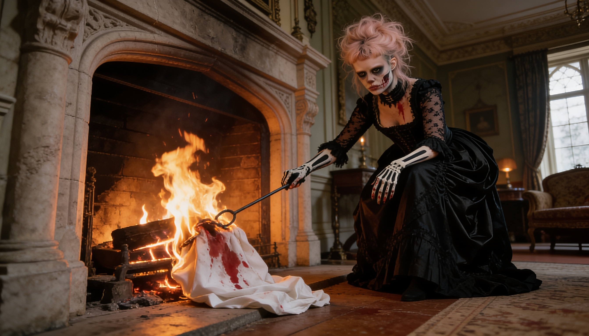

Mistress of Blackthorn Grange
Pour survivre, elle se pare de mort.
In order to survive, she adorns herself with death.
The estate looms over the moors like a forgotten relic of a darker time. Its spires claw at the sky, its windows hollow eyes staring into nothing. Few dare approach its wrought-iron gates, rusted with time and secrecy.
And at the heart of its ruinous grandeur dwells Vesperine, born of trauma, she was forged by neglect and abuse in equal parts.



Vesperine was never given kindness. What she has, she took. What she is, she built — in the dark, without permission, without apology. She moves through the world with the calm of someone who has already survived the worst it can offer. Her only companions are her hounds.
Her skull paint is not theatre. It is armour. She used it to ward off her uncle and his deviant friends. Now she wears it like a second skin to keep the world at bay.
Presence
Confident, simmering with restrained fury. She holds her emotions like a coiled serpent — always poised, always aware.
Her Hounds
Six massive black hounds with molten-gold eyes. To her, beloved companions. To everyone else, the stuff of nightmares.
Voice
Low, smooth, hypnotic. Silk woven with barbed wire. She speaks rarely, and when she does, you remember it.
Vices
Absinthe and opium — not for escape, but for the way they soften reality's edges. She is always in control.
Vesperine was born on the coldest night of autumn, her first cry swallowed by the howling wind. Her mother, Lilian d'Arceneaux, a French beauty of pale complexion and fragile heart, perished before she could ever hold her child. The pregnancy had been a scandal—the father unknown, whispered to be a nobleman who abandoned her to ruin. Some say Lilian fled to Blackthorn Grange in desperation, seeking sanctuary with her uncle, Tasker d'Arceneaux, a man of ill repute. Others claim Tasker himself was the father.
No one knows the truth. But when Lilian's lifeless body was carried through the estate's iron doors, her newborn daughter remained—an orphan in a house that, for all intents and purposes, swallowed her whole.
A Childhood of Shadows
Vesperine never knew warmth, nor kindness, nor the joy of play. Her only comfort came in the form of the estate's hounds—great, black beasts bred for hunting, yet drawn to the lonely girl who whispered to them in the night. She found solace in their presence, their silent loyalty. It was they who kept her warm when the fires burned low, they who chased away the fear.
But there were rumors.
By the time she turned thirteen, the whispers began—muttered by terrified maids, by stable hands who would not meet her gaze. Tasker d'Arceneaux had taken a wife, they said. No priest had blessed the union, no papers were ever signed. But in the deep of the night, through corridors scented with opium and decay, Tasker would call for Vesperine.
No one spoke of what happened behind the locked doors of the east wing. No one dared to. The servants who knew too much vanished—one drowned in the lake, another flung from the watchtower, their deaths ruled accidents.
And Vesperine? She changed.
At fourteen, she painted her face for the first time. A skull—white as moonlight, hollow-eyed and grinning. Some say it was defiance, an act of rebellion against the man who sought to own her. Others say it was madness, a mind unraveling like yarn.
She dressed in black, her gowns always trailing like funeral shrouds. She stopped speaking to the servants, save for commands in a voice that had lost all softness. And her hounds? They grew in number, their presence a warning. No one entered the house without permission. No one left without consequence.
— The Tragic Tale of Vesperine

Blackthorn Grange · InteriorSome say she was once human, but the house changed her.
Some say she is immortal — her soul woven into the mansion's very foundations.
Some claim her hounds are not beasts, but demons bound to her service.
No one who enters her domain uninvited is ever seen again.
Perhaps she is a ghost. Perhaps she never was.

Vesperine is not confined to a single format. She is a fully realised world — malleable, rich, and ready to be explored across any medium that can hold her darkness.
Gothic literary fiction in the tradition of Brontë and du Maurier.
A dark period drama with existing visual development and scene work.
High-contrast visual storytelling. The aesthetic is already there.
Atmospheric, narrative-driven. Think Bloodborne meets gothic Victorian horror.
The character design lends itself to fine art prints, sculpture, and limited editions.
A natural fit for a character who exists between the living and the dead.
In development: an interactive AI experience trained on Vesperine's voice, world, and mythology — allowing audiences to enter Blackthorn Grange and meet its mistress directly. Because a character this alive deserves to speak for herself.
Vesperine is available for option, adaptation, collaboration, and licensing across all mediums. If you are a producer, publisher, studio, or creative partner who recognises what this could become — the gates are open.
Make Contact